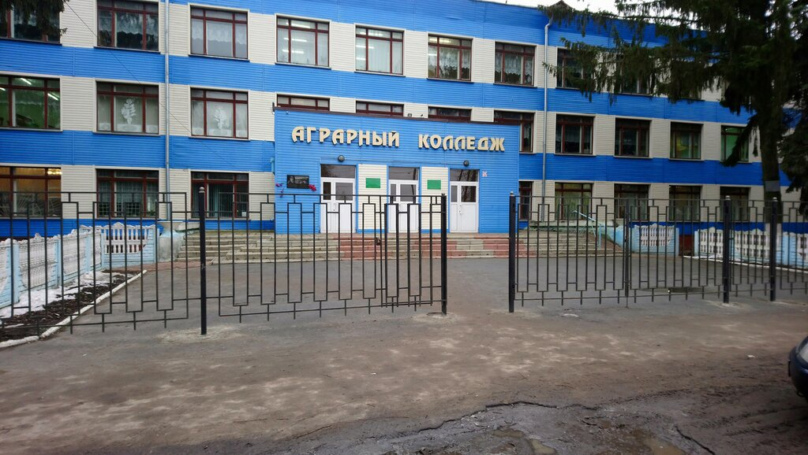
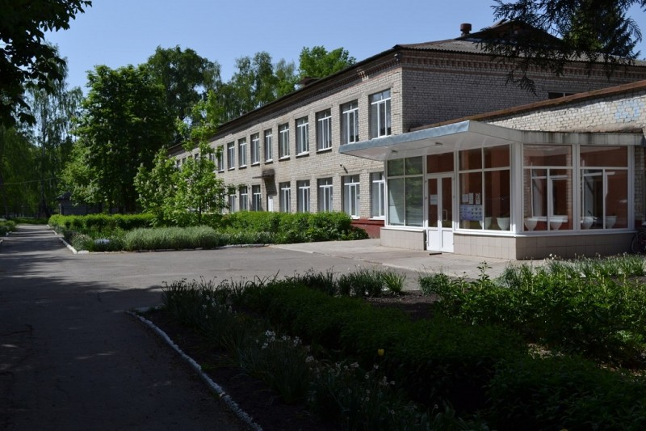
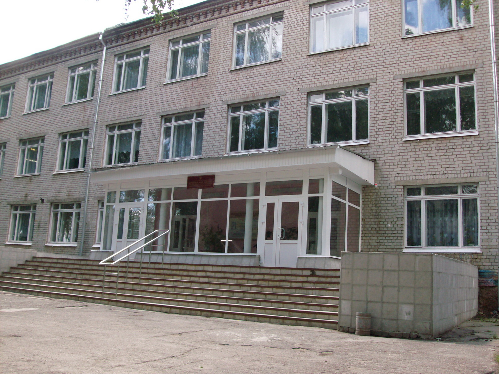
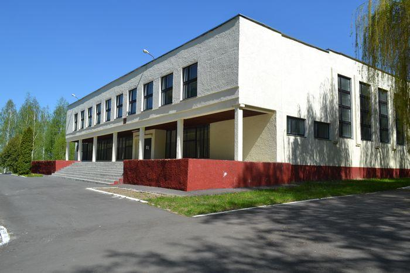

Контаты колледжа:
Трубчевский филиал ФГБОУ ВО Брянский ГАУ
Официальное наименование:
Трубчевский аграрный колледж - филиал федерального государственного бюджетного образовательного учреждения высшего образования «Брянский государственный аграрный университет»
сокращенное:
Трубчевский филиал ФГБОУ ВО Брянский ГАУ
Адрес: 242221, г.Трубчевск Брянской области, ул. Володарского, д.4
Телефон: +7 (48352) 24-8-76
E-mail: tragrcol@online.debryansk.ru, tragrcol@yandex.ru

ФИЛИАЛЫ(БГАУ)
Брасовский филиал ФГБОУ ВО Брянский ГАУ
Официальное наименование:
Брасовский промышленно-экономический техникум - филиал федерального государственного бюджетного образовательного учреждения высшего образования «Брянский государственный аграрный университет»
сокращенное:
Брасовский филиал ФГБОУ ВО Брянский ГАУ
Адрес: 242300, Брянская область, Брасовский район, п. Локоть, пр-т Ленина, д. 15.
Телефон: +7 (48354) 91-1-02
E-mail: bsht@bk.ru

Наверх
Мичуринский филиал ФГБОУ ВО Брянский ГАУ
Официальное наименование:
Мичуринский филиал федерального государственного бюджетного образовательного учреждения высшего образования «Брянский государственный аграрный университет»
сокращенное:
Мичуринский филиал ФГБОУ ВО Брянский ГАУ
Адрес: 241524, Брянская область, Брянский район, пос. Мичуринский, ул. Берёзовая, д. 1
Телефон: +7 (48329) 11-1-90
E-mail: mf-bgsha@mail.ru

Новозыбковский филиал ФГБОУ ВО Брянский ГАУ
Официальное наименование:
Новозыбковский сельскохозяйственный техникум – филиал федерального государственного бюджетного образовательного учреждения высшего образования «Брянский государственный аграрный университет»
сокращенное:
Новозыбковский филиал ФГБОУ ВО Брянский ГАУ
Адрес: 243020, Брянская обл., г. Новозыбков, ул. Мичурина, д.59
Телефон: +7 (48343) 59-1-83
E-mail: uchchast@yandex.ru

Наверх